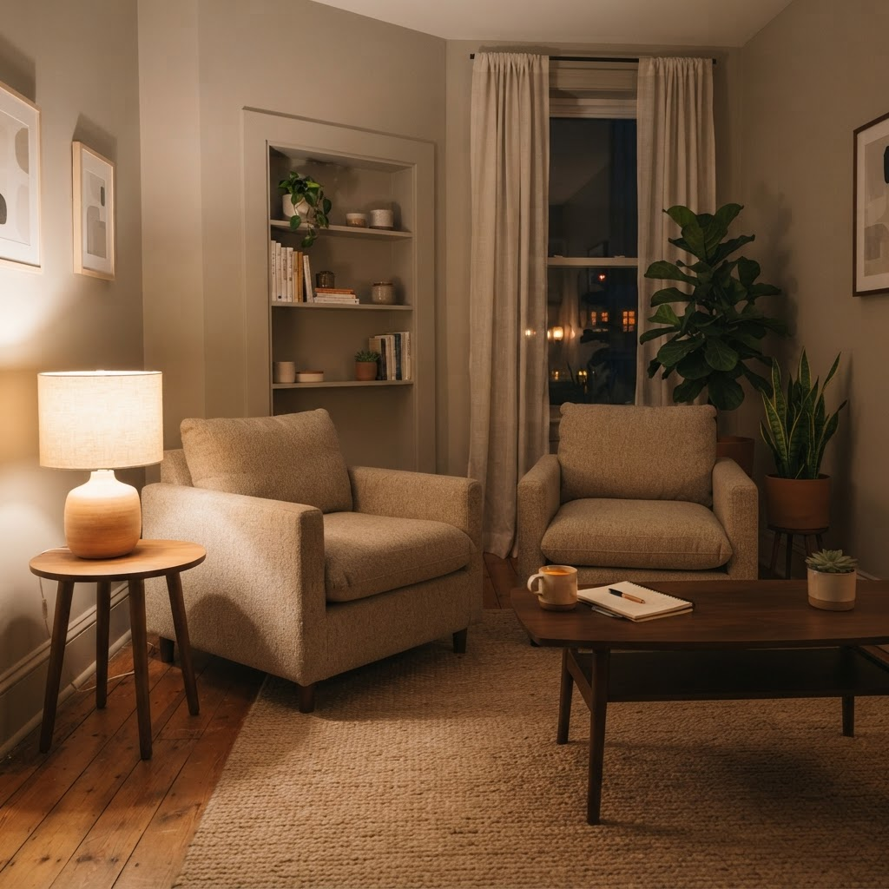
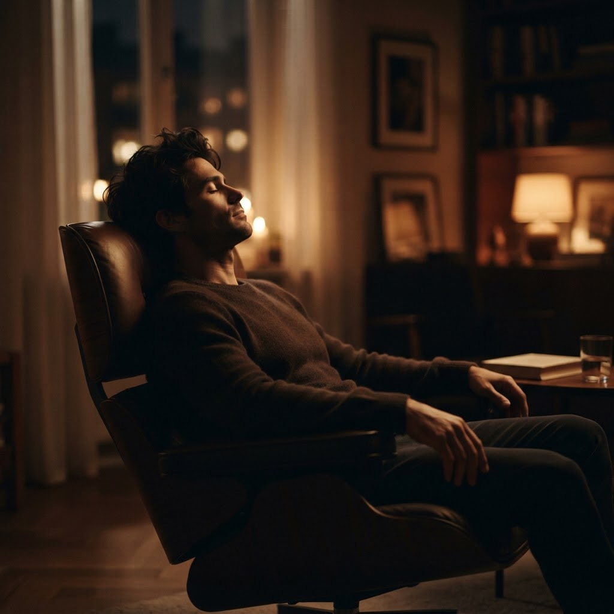
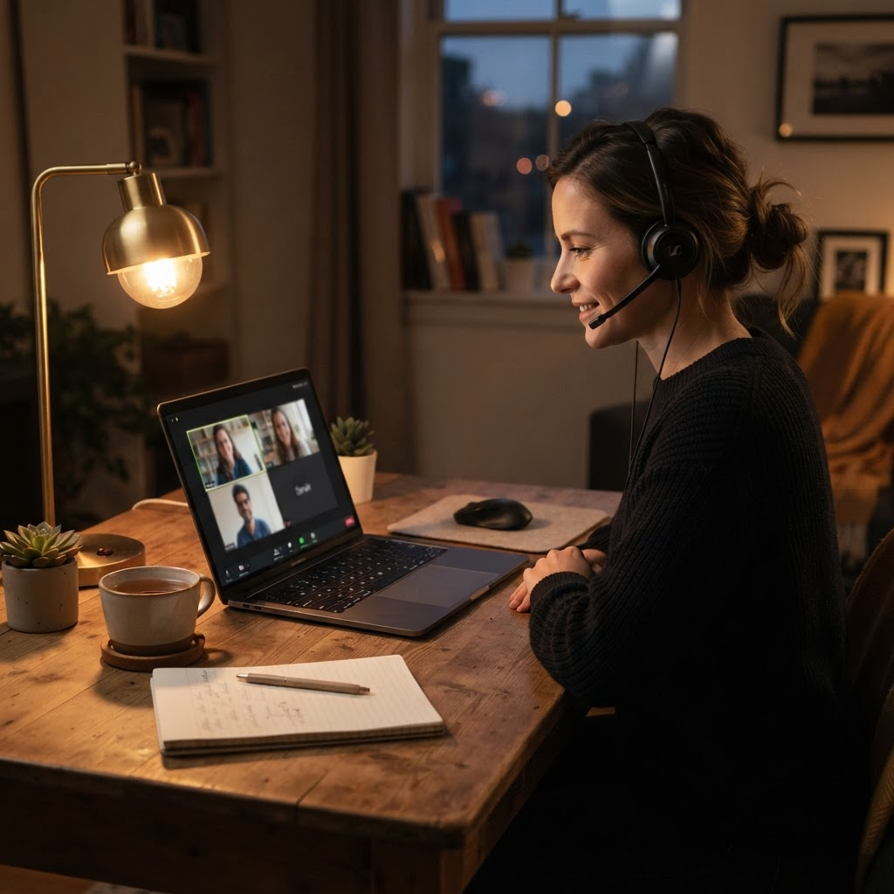

Тревога, страхи и блоки — прорабатываются.
Меня зовут Михаил. Я помогаю убрать тревогу, страхи и блоки, найти внутреннюю опору и вернуть уверенность. Начнём со знакомства — без лишних рисков.



С чем приходят на работу
Прорабатываемые темы — если узнали себя в двух-трёх строках, это точно сюда.
Пробное занятие — 4 шага за час
Нажимайте на шаги — так выглядит встреча от начала до векторного выхода. 45–60 минут, офлайн или онлайн.
Пробное занятие — это не просто разговор, а реальный инструмент, который вы сможете применять сразу.
Формат: офлайн в Минске (Петра Глебки, 8) или онлайн через Zoom.
Разбираем вашу ситуацию
Спокойный разговор без оценок: что происходит сейчас, когда это началось и что вы уже пробовали. Цель — увидеть картину целиком.
Программы работы
Начните с пробного занятия — дальше выберем программу под вашу задачу и темп.
Коучинг3 месяца
Системная работа над состоянием, опорами и целями.
Обучение техникам6 месяцев
Осваиваете техники работы с подсознанием — для себя и практики.
Готовое сопровождениеполный цикл
Сопровождение под ключ: от разбора ситуации до устойчивого результата.
VIPиндивидуально
Максимальная глубина работы и персональное внимание на всём пути.
Где проходит встреча
Офлайн · Минск
Петра Глебки, 8 — спокойный кабинет, тёплая комната и ничего лишнего.
Онлайн · Zoom
Из любого города: гипно-практики полностью проходят онлайн. Нужны наушники и час без отвлечений.
Я не «человек-волшебник». Я проводник — к вашему собственному ресурсу.
Гипнолог и мастер работы с подсознанием. Помогаю убрать тревогу, страхи и блоки, найти внутреннюю опору и вернуть уверенность. Работаю с 2020 года, отвечаю быстро — обычно в течение пяти минут.
Instagram · sorokin_mkПервый шаг — пробный час.
Позвоните или напишите в личные сообщения: подберём время офлайн или онлайн. Пробное занятие — 120 BYN, без лишних рисков.